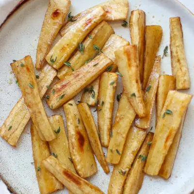

Honey Roasted Parsnips

Ingredients
- 2 pounds parsnips
- 2 tablespoons olive oil
- 2 tablespoons honey, divided
- 1/2 teaspoon cinnamon
- Fresh herbs - thyme, rosemary, parsley
Steps
- Preheat oven to 400°F. Grease or line a large baking sheet for easy cleanup.
- Prepare the parsnips. Using a sharp knife, trim the ends then slice in half widthwise. Then slice the thinner bottom half in half lengthwise. Slice the thicker top half into thirds or quarters to achieve evenly sized strips - aim for about 1/2 inch thickness.
- Add parsnips to a mixing bowl. Pour in olive oil, 1 tablespoon of honey, and cinnamon. Toss well to combine.
- Spread in a lined baking pan and bake for 25-30 minute, until parsnips are tender and caramelized. Remove from oven and drizzle with remaining honey. Top with fresh thyme or herb of choice.
Recipe by Min Kwon · Kidfriendly Meals, from MJ and Hungryman. Saved here for personal use; the original has the full notes, tips and photos. Open original